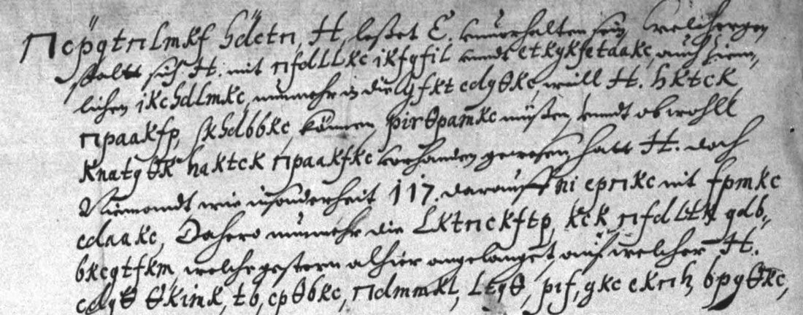

Cipher Letters › Copenhagen, Rigsarkivet › 1627
Into a third week waiting for a galley: "Quem novit" to Christian IV, 20 July [1627 or 1628]
A traveller who signs only "Quem novit" ("whom you know") tells the king he has waited weeks for a galley and borrowed 3,000 thalers. Read in part, with the key recovered from the ciphertext alone, starting from a guessed salutation.
- Letter
- "den 20 Iulii anno currentis": no year on the leaf. A sibling letter points to 1627; the filing order pointed to 1628.
- From / to
- Writer unknown, signing "Quem novit" → Christian IV ("Gnädigster König")
- Held at
- Copenhagen, Rigsarkivet, TKUA, Speciel del, Nederlandene B.41 (1608-34), Arkivalieronline unit 261377, image 443 (right page)
- Cipher
- Simple substitution of 23 letter-like signs for 21 letters, word by word among clear German; one sign without a value; code numbers 117 (twice) and 118
- Read
- 70 of 103 cipher units (67.96%) when each sign takes the value at least two of three readers give; 47 of 103 (45.63%) if all three must agree
- Record
- Cyphersolver, targets/quemnovit1627 (issue #450, PR #483, PR #588); maintainer's write-up: quemnovit1627

Decoded
What is new and what was known
No decipherment of this letter was found, on the leaf, beside it (images 442-449) or in print. The search covered Danske Magazin, Kong Christian IV's egenhaendige Breve, Danske Samlinger, Historisk Tidsskrift, the Swedish Handlingar, DECODE, Cryptiana and archive.org full text. The search is thin: an anonymous letter cannot be searched by name, so "not printed" cannot be proved. Christian Wilhelm's 1627 correspondence and the Venetian state papers were not checked.
What this work adds: the letter itself, found in the folder of catalogue entry 2541, a key recovered from the ciphertext, three independent transcriptions and a reading of 67.96% of the cipher units (70 of 103). It also corrected entry 2541: image 447 is a 1628 chancery decipherment sheet for Schultetus's number code, a different cipher.
A second letter in the same hand and key, at images 465-466 of the same unit and dated in cipher 25 July 1627, was found and read by Mark Vladimir Prizmic (issue #450 comment of 14 November 2026; preprint doi:10.5281/zenodo.24210516). Our own sweep of images 426-475 missed it. It is his reading and is not part of this page's figures.
The letter
One page (image 443, right page), 19 lines, filed among Johann Schultetus's reports from The Hague of 1628-29 but not in Schultetus's hand. About 100 cipher words stand among clear German. It is addressed to the King as "Gnädigster König" and signed "Quem novit" with a flourish in place of a name.
The abbreviations H., E. and W. are written in clear. E. is the King; H. is the traveller. The Signoria and the galleys point to Venice. unverified: not proved
Writer: proposed, not proved. One article (Bohemiae Occidentalis Historica 2/2019, read through a summariser only) puts Christian Wilhelm of Brandenburg, Administrator of Magdeburg, in Venice in early July 1627 on his way to lead Danish forces in Silesia. A three-week wait for a galley on 20 July fits. unverified: not tested against any dated source
Year. The leaf says only "anno currentis". Its filing order, between papers of September 1628 and Schultetus's letter after 24 July 1628, points to 1628. The sibling letter of 25 July 1627 reports an arrival after a galley voyage, five days after this letter's "he leaves today", which points to 1627. That is an inference from the sequence, not a date on the leaf.
What the writer says
German as read; English from the translation in the repository. Italics = from cipher (asterisks in the repository files). [?word] = an emendation of a one-sign slip; a letter in brackets = a disputed sign supplied from sense; [117] = a code with no value. Every one of these counts as not read.
H. has waited into a third week for a galley, at cost and to his vexation. Small galleys were on hand, but nobody, [117] in particular, would advise him to risk them. Then:
"Dahero nunmehr ein [?Signoria] [?eine] grosse [c]ommendiret, welche gestern alhier angelangt""So the [?Signoria] has now assigned [?a] large one, which arrived here yesterday"
He leaves on it today. Then money:
"alhier noch ein 3000 Thaler aufnehmen müssen, verhoffet E. werde damit [z]u friden sein undt es aus[z]ahlen lassen""H. has had to borrow another 3,000 thalers here; he hopes Y(our Majesty) will be [content] with that and have it paid"
[117] has resolved nothing on his proposal so far, but he hopes W. will declare themselves somewhat better. The letter is dated "[118] den 20 Iulii" and signed "Quem novit".
The cipher
A simple substitution, word by word, among clear German. 23 signs carry 21 plain letters: s and k each have two signs, and i stands for i, u and v. One sign (an n-form, used once) has no value in the key. The three code numbers, 117 twice and 118, are not solved.
Code 118 is not the place of writing. It stands before "den 20 Iulii" here and before "den 25 iulii" in the sibling letter, which was written somewhere else. It is a word of the dating formula with no value. An earlier gloss, "place of writing, Venice likely", is withdrawn.
The sibling letter also supports a value for the n-form sign: it stands twice in the number word that the key reads ?want?igk, so n = z gives "zwantzigk". Brice Dudout reported the same value. The key file was left as stamped and no count changes.
How it was read
- 12 Nov 2026. Sweep of images 426-475 of unit 261377; image 443 found to hold a sign cipher signed "Quem novit", with no decipherment beside it.
- Reader 1 (the session that broke the key) transcribed the page from crops and froze it at 02:18:36 UTC. Disclosure: the letter values took shape while transcribing, so "frozen before decoding" means before any scripted decode, not before any guess.
- The clear text continues "... lasset E. unverhalten sein", so the first two cipher words were taken as "Gnadigster Konig". The rest of the key followed from word patterns, by hand. No solver was used.
- Readers 2 and 3, separate sessions working blind, transcribed the page again and froze their files (09:49:43 and 11:22:40 UTC).
- An adjudicated transcription, taking for each sign the value at least two of the three readers give, was frozen at 13:17:09 UTC and decoded once at 13:17:19 UTC.
- 14 Nov 2026. After Prizmic's comment, the sibling letter was looked at on images 465 and 466 and the gloss of code 118 corrected (PR #588).
Checks
- Shuffled keys: none of 5,000 shuffled keys, at two seeds, reach the German 4-gram score of any of the four readings.
- Sign agreement between readers: reader 2 with reader 1, 511 of 565 signs (90.44%); reader 3 with reader 1, 497 of 564 (88.12%); reader 3 with reader 2, 484 of 564 (85.82%).
- Integration check (12 Nov 2026): key, transcription, stamped files, adjudication hashes and all five counts reproduced; an independent decoder gives the same German. A vocabulary control found 60 of 100 cipher words in a German vocabulary built from the repository's corpora for the true key; the best of 3,000 shuffled keys found 6.
- What the fit does not show: the key was fitted to the whole letter by hand, so the German fit confirms the key but is not a blind test. A figure of 63 of 68 for lines 11-19 is not a held-out test.
- Image 443 was fetched and compared in the integration check. The g and q signs look alike at the resolution used, and the question was not settled by eye.
- Sibling letter (14 Nov 2026): the key, unchanged, reads about 12 cipher words tried by eye on images 465-466, including "gnedigster konig" and the cipher date 25 July 1627.
- The repository's own scripts for readings and statistical validation were not run on this letter.
How much is read?
| Transcription | Units read | Share |
|---|---|---|
| Adjudicated: majority of three readers (the figure of record) | 70 of 103 | 67.96% |
| All three readers must agree | 47 of 103 | 45.63% |
| Reader 1, who built the key (withdrawn as the headline) | 93 of 103 | 90.29% |
| Reader 2, blind | 62 of 104 | 59.62% |
| Reader 3, blind | 49 of 110 | 44.55% |
The first figure filed, 90.29%, was one reader's count, and that reader built the key while transcribing. Two blind readers did not reproduce it, so the contributor withdrew it as the headline. The readers divided the units in their own ways, so the totals differ.
The 33 units not read: 13 turn on the g/q signs, 7 are one-sign slips reader 1 emended, 4 turn on the pi/Z/n signs, 3 on c/e, 3 are code numbers and 3 are other single signs.
What remains uncertain
- Codes 117 (twice) and 118 have no value.
- The g/q signs (13 units) and the pi/Z/n and c/e signs (7 units) are disputed between the readers. A person comparing them at full size is needed.
- The writer is not proved, and the year is not written on the leaf.
- The clear German was read by one reader only.
- The sibling letter is not transcribed in this record. It is Prizmic's reading, as are his identifications in the preprint, which were not checked here.
Who did what
Malcolm McBratney (Brisbane) directed the work and set its rules, with Claude (Anthropic) sessions finding the letter, transcribing, building the key, reading and checking. He sent it as issue #450; Daniel Bourdeau checked it and asked for the files, which came in PR #483 and were integrated on 12 Nov 2026.
Mark Vladimir Prizmic found and read the sibling letter of 25 July 1627 and showed that code 118 is not the place of writing. Brice Dudout reported on the issue an independent key, with 16 of 16 shared letter values equal to this one, and the value z for the sign without a value; he sent no files, so this is recorded as reported, not checked.
Sources
- Copenhagen, Rigsarkivet, TKUA Nederlandene B.41, unit 261377, image 443: Arkivalieronline. Sibling letter: images 465 and 466.
- Cyphersolver, targets/quemnovit1627: key, three transcriptions, adjudication, reading, translation, holes and checks.
- Cyphersolver write-up: quemnovit1627.
- GitHub issue #450.
- Mark Vladimir Prizmic, "Bethlen Gabor in Danish Cipher, 1627-1629: The Reports of Johann Schultetus and a New 'Quem novit' Letter in the Danish Rigsarkivet", Zenodo, doi:10.5281/zenodo.24210516.